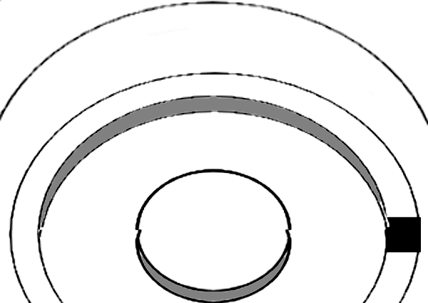

Challenges:
animate stephen without overcoat, with and without hat
animate mulligan
animate haines
animate milkwoman
how thick are the walls?
add page for sandycove-to-dalkey trip
1
2
3
4a
4b
4c
5a
5b
5c
6a
6b
7
8a
8b
8c
9
10
11
12
13
14
15a
15b
16a
16b
17a
17b
18